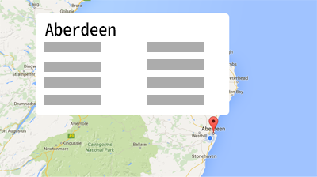
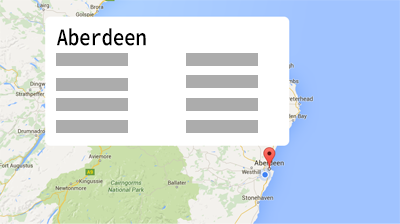

#trendingWhere?


- Pan across the map by clicking and dragging your mouse.
- Select your chosen city by clicking on the marker.
- The top 10 trending topics for that city will be displayed.
- Get started by signing in to twitter with the button below!